Last updated: 2005-05-11
このデザインパターン改善カタログは、デザインパターンを使用する際に生じるさまざまな問題点が、MixJuice 言語によっていかに解決されるかをカタログ化してまとめたものである。このカタログは AspectJ 、 CLOS 、 Ruby などの open class の機能を持つ言語でも利用可能である。（詳しくは「他のプログラミング言語への応用」の節を参照のこと）
表１は、それぞれのデザインパターンの問題点と、
それを解決するために使用する MixJuice のプログラミング技法をまとめたものである。
この中で特に Adapter 、 Decorator 、 Visitor を読むことをお勧めする。
| デザインパターン | 種別 | 解決される問題 | 使用する技法 | ||||
|---|---|---|---|---|---|---|---|
| 導入 | 拡張 | 情報隠蔽 | 型安全 | 複雑 | |||
| AbstractFactory | 改善 | p.98 | アブストラクトメソッド追加 | ||||
| 別解 | p.98 | N | N | 実装モジュール選択 | |||
| Builder | 改善 | p.108 | メソッド追加 | ||||
| 別解 | N | 実装モジュール選択 | |||||
| FactoryMethod | 別解 | N | p.121 | 実装モジュール選択 | |||
| Prototype | 改善 | p.131 | アブストラクトメソッド追加 | ||||
| Singleton | 別解 | p.138 | メソッド拡張 | ||||
| Adapter | 別解 | p.153 | p.152 | スーパーインターフェース追加 | |||
| Bridge | 改善 | N | アブストラクトメソッド追加 | ||||
| 別解 | N | N | 実装モジュール選択 | ||||
| Composite | |||||||
| Decorator | 改善 | p.191 | メソッド追加, アブストラクトメソッド追加 | ||||
| 別解 | p.191 | p.190 | クラス拡張 | ||||
| Facade | 改善 | p.201 | 名前空間分離 | ||||
| Flyweight | |||||||
| Proxy | |||||||
| ChainOfResponsibility | 改善 | N | p.241 | メソッド追加, アブストラクトメソッド追加 | |||
| Command | |||||||
| Interpreter | 改善 | N | p.265 | アブストラクトメソッド追加 | |||
| Iterator | 改善 | p.280 | 名前空間分離 | ||||
| Mediator | |||||||
| Memento | 改善 | p.307 | 名前空間分離 | ||||
| Observer | 改善 | N | クラス拡張 | ||||
| State | 改善 | N | アブストラクトメソッド追加 | ||||
| Strategy | 別解 | N | 実装モジュール選択 | ||||
| TemplateMethod | |||||||
| Visitor | 改善１ | p.359 | 仕様モジュールと実装モジュールの分離 | ||||
| 改善２ | N | p.358 | アブストラクトメソッド追加 | ||||
| 別解 | N | アブストラクトメソッド追加 | |||||
注：表中のページ番号は「オブジェクト指向における再利用のためのデザインパターン（ Erich Gamma 、 Richard Helm 、 Ralph Johnson 、 John Vlissides 、ソフトバンク パブリッシング）」（以下 『GoF 本』と呼ぶ）の中でその問題が指摘されているページを示す。 "N" は GoF 本内でその問題が指摘されていないことを示す。
以下の節では、本カタログ内で使われている用語等について説明する。
「改善」は GoF パターンの改善であることを意味する。 MixJuice は、 GoF パターンをクラス構造を変化させることなく改善することができる。改善によって、 GoF パターンのメリットを全て引き継いだ上に、いくつかの問題点を解決することができる。
「別解」は対応する GoF パターンと異なったクラス構造を持つ解であることを意味する。オリジナルの GoF パターンと比較して、一般にメリットとデメリットがある。
解決される問題は、以下の５つのカテゴリに分類される。
オリジナルの GoF パターンにおいて、導入の際に既存のソースコードの編集が必要になるという問題。
オリジナルの GoF パターンは、ソースコードを編集しなければある種の拡張をサポートできないという問題。
オリジナルの GoF パターンにおいて、一部の名前を public にせざるを得ないという問題。（ Java のパッケージまたはネストしたクラスの機構によって解決できる場合もある。）
オリジナルの GoF パターンにおいて、サブクラスのメソッドを呼び出すためにダウンキャストが必要になる場合があるという問題。
オリジナルの GoF パターンのクラス構造が複雑で、間違いを起こしやすいという問題。
カタログ内のそれぞれの解は「レイヤードクラス図」と MixJuice の擬似コードを用いて説明している。
レイヤードクラス図は MixJuice の差分ベースモジュールによってどのようにプログラムが拡張されるかを表現するための記法である。
詳しくは レイヤードクラス図の提案を参照されたい。
このカタログは GoF 本からの引用を含んでいる。 それぞれのデザインパターンの「目的」の説明は GoF 本からそのまま引用した。 それぞれのデザインパターンのクラス図は、 UML の最近の表記に従って書き直して引用した。
このカタログ内の解の多くは AspectJ や CLOS 、 Ruby といった他の AOP(アスペクト指向プログラミング)言語 や open class 機構を持つ言語に応用できる。
MixJuice のプログラミング技法はそのような言語のプログラミング技法と対応している。表２は MixJuice 、 AspectJ 、 CLOS 、 Ruby の技法の対応を示している。
| 技法 | AspectJ | CLOS | Ruby |
| メソッド拡張 | around advice | alias/def | |
| スーパーインターフェース追加 | declare parents | defmethod | include |
| フィールド追加 | introduction | assignment | |
| メソッド追加 | introduction | defmethod | dynamic method definition |
| アブストラクトメソッド追加 | introduction | useless because dynamic typing | |
| 名前空間分離 | aspect | package | |
| 仕様モジュールと実装モジュールの分離 | |||
| 実装モジュール選択 | aspect selection | require selection | |
いくつかの他の言語やシステムのドキュメントにはその言語がどのようにしてデザインパターンを不要にしているかどうかを説明している。以下のページを参考にされたい。
MixJuice についての詳細は、このページを参照されたい。
AspectJ を使ってデザインパターンを実装し分析している。彼らのプログラミングスタイルは我々のものとは大きく異なる。彼らは AspectJ の open class (introduction) の機能をあまり使っていない。
互いに関連したり依存し合うオブジェクト群を、その具象クラスを明確にせずに生成するためのインターフェースを提供する。
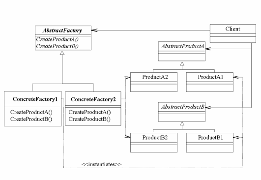
AbstractFactory に対するアブストラクトメソッド追加を用いる。
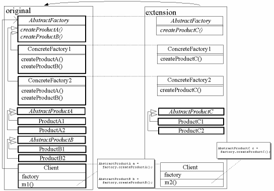
module original {
define abstract class AbstractFactory {
define abstract AbstractProductA createProductA();
define abstract AbstractProductB createProductB();
}
define class ConcreteFactory1 extends AbstractFactory {
AbstractProductA createProductA(){...}
AbstractProductB createProductB(){...}
}
define class ConcreteFactory2 extends AbstractFactory {
AbstractProductA createProductA(){...}
AbstractProductB createProductB(){...}
}
define abstract class AbstractProductA {...}
define class ProductA1 extends AbstractProductA {...}
define class ProductA2 extends AbstractProductA {...}
define abstract class AbstractProductB {...}
define class ProductB1 extends AbstractProductB {...}
define class ProductB2 extends AbstractProductB {...}
define class Client {
AbstractFactory factory;
define void m1(){
AbstractProductA a = factory.createProductA();
AbstractProductB b = factory.createProductB();
}
}
}
module extension extends original {
class AbstractFactory {
define abstract AbstractProductC createProductC();
}
class ConcreteFactory1 {
AbstractProductC createProductC(){...}
}
class ConcreteFactory2 {
AbstractProductC createProductC(){...}
}
define abstract class AbstractProductC {...}
define class ProductC1 extends AbstractProductC {...}
define class ProductC2 extends AbstractProductC {...}
class Client {
define void m2(){
AbstractProductC c = factory.createProductC();
}
}
}
Product クラスに対して実装モジュール選択を用いる。
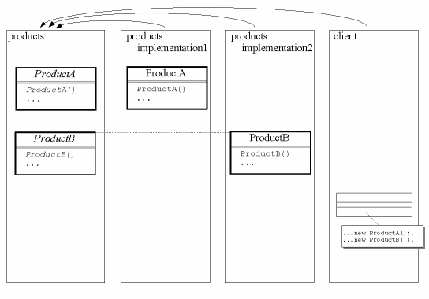
module products {
define class ProductA {
define abstract ProductA();
...
}
define class ProductB {
define abstract ProductB();
...
}
}
module products.implementation1 extends products {
class ProductA {
ProductA() {...}
...
}
class ProductB {
ProductB() {...}
...
}
}
module products.implementation2 extends products {
class ProductA {
ProductA() {...}
...
}
class ProductB {
ProductB() {...}
...
}
}
module client extends products {
... new ProductA() ...
... new ProductB() ...
}
複合オブジェクトについて、その作成過程を表現形式に依存しないものにすることにより、同じ作成過程で異なる表現形式のオブジェクトを生成できるようにする。
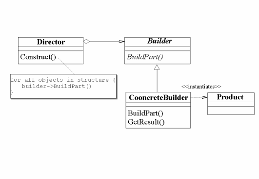
ConcreteBuilder クラスに対するメソッド追加を用いる。
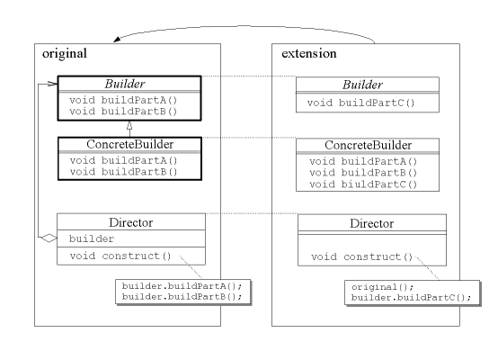
module original {
define abstract class Builder {
define void buildPartA(){}
define void buildPartB(){}
}
define class ConcreteBuilder extends Builder {
void buildPartA(){...}
void buildPartB(){...}
}
define class Director {
Builder builder;
define void construct(){
builder.buildPartA();
builder.buildPartB();
}
}
}
module extension extends original {
class Builder {
define void buildPartC(){}
}
define class ConcreteBuilder2 extends Builder {
void buildPartA(){...}
void buildPartB(){...}
void buildPartC(){...}
}
class Director {
void construct(){
original();
builder.buildPartC();
}
}
}
Builder に対して実装モジュール選択を用いる。
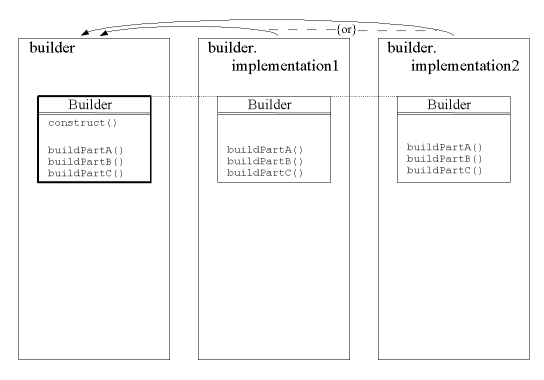
module builder {
define class Builder {
// このクラスは Director の関数を持っている。
define void construct() { ... }
define void buildPartA() {}
define void buildPartB() {}
define void buildPartC() {}
}
}
module builder.implementation1 extends builder {
class Builder {
void buildPartA() { ... }
void buildPartB() { ... }
void buildPartC() { ... }
}
}
module builder.implementation2 extends builder {
class Builder {
void buildPartA() { ... }
void buildPartB() { ... }
void buildPartC() { ... }
}
}
オブジェクトを生成するときのインターフェースだけを規定して、実際にどのクラスをインスタンス化するかはサブクラスが決めるようにする。 Factory Method パターンは、インスタンス化をサブクラスに任せる。
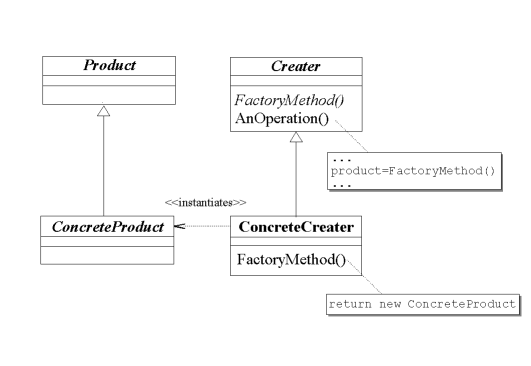
Product と Creator に対して実装モジュール選択を用いる。
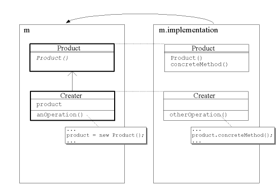
module m {
define class Product {
define abstract Product();
}
define class Creator {
define Product product;
define void anOperation() { ... product = new Product(); ... }
}
}
module m.implementation extends m {
class Product {
Product() {...}
define void concreteMethod() {...}
}
class Creator {
define void anotherOperation() {
...
product.concreteMethod(); // キャストは必要ない。
...
}
}
}
生成すべきオブジェクトの種類を原型となるインスタンスを使って明確にし、それをコピーすることで新たなオブジェクトの生成を行う。
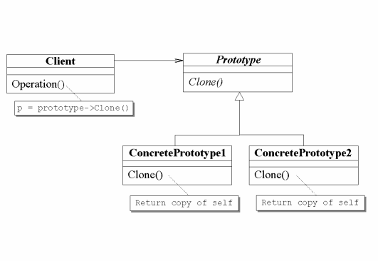
既存のクラスに対して "copy()" アブストラクトメソッド追加を用いる。
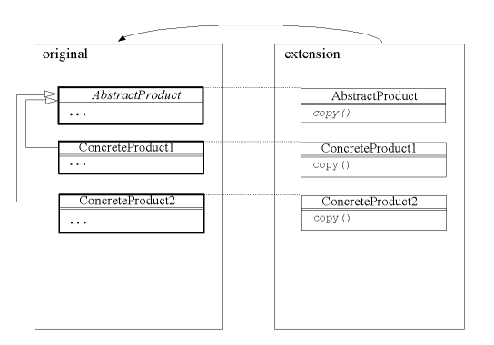
module original {
define abstract class AbstractProduct {...}
define class ConcreteProduct1 extends AbstractProduct {...}
define class ConcreteProduct2 extends AbstractProduct {...}
}
module extension extends original {
class AbstractProduct {
define abstract AbstractProduct copy();
}
class ConcreteProduct1 {
AbstractProduct copy() {...}
}
class ConcreteProduct2 {
AbstractProduct copy() {...}
}
}
あるクラスに対してインスタンスが一つしか存在しないことを保証し、それに対してグローバルにアクセスするための方法を提供する。
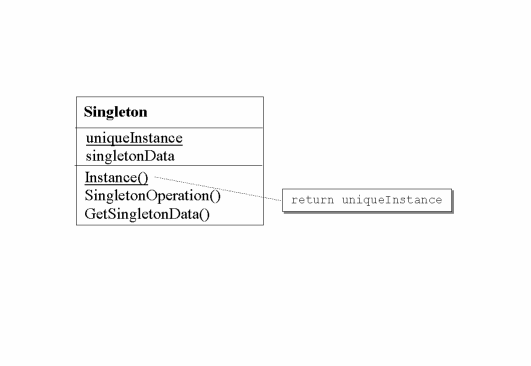
スタティックメソッドに対するメソッド拡張が可能ならば、拡張性の制約を解決できる。（ただし MixJuice の現在のバージョン 1.0 ではスタティックメソッドの拡張をサポートしていないので注意。）
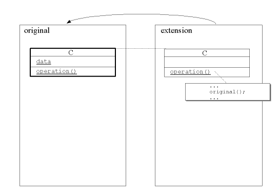
module original {
define class C {
define static void operation() {...}
define static int data;
}
}
module extension extends original {
class C {
static void operation() { ... original() ...}
}
}
あるクラスのインターフェースを、クライアントが求める他のインターフェースへ変換する。 Adapter パターンは、インターフェースに互換性のないクラス同士を組み合わせることができるようにする。
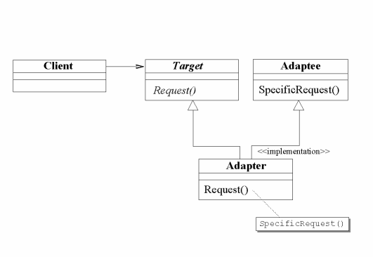
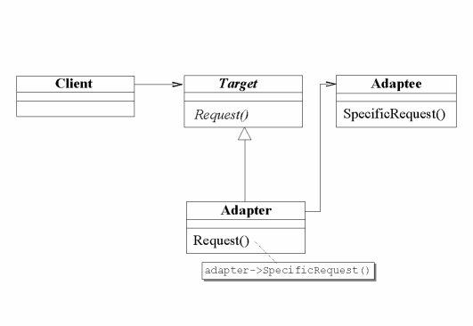
Adapter クラスへのスーパーインターフェース追加を用いる。
以下はこの対策におけるクラス Adapter やオブジェクト Adapter との間のトレードオフである。（GoF 本の p.152, 8行目以降のクラス Adapter とオブジェクト Adapter も参照されたい。）
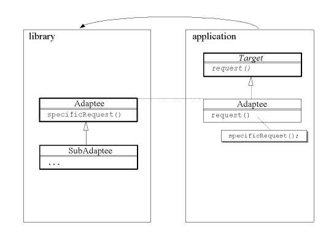
module library {
define class Adaptee {
define void specificRequest() {...}
}
define class SubAdaptee extends Adaptee {...}
}
module application extends library {
define interface Target {
define void request();
}
class Adaptee implements Target {
void request() { specificRequest(); }
}
}
抽出されたクラスと実装を分離して、それらを独立に変更できるようにする。
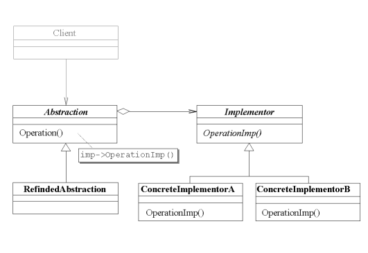
Abstraction と Implementor に対してアブストラクトメソッド追加を用いる。
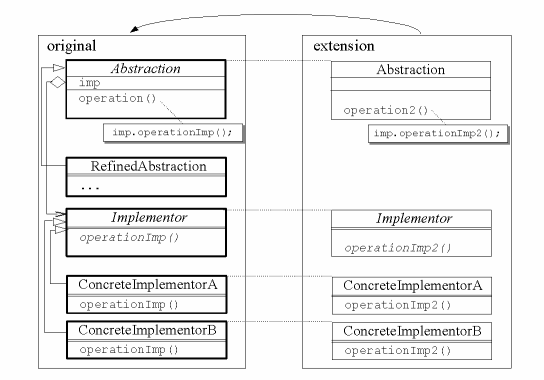
module original {
define abstract class Abstraction {
Implementor imp;
define void operation() { imp.operationImp(); }
}
define class RefinedAbstraction extends Abstraction {
...
}
define abstract class Implementor {
define abstract void operationImp();
}
define class ConcreteImplementorA extends Implementor {
void operationImp() { ... }
}
define class ConcreteImplementorB extends Implementor {
void operationImp() { ... }
}
}
module extension extends original {
class Abstraction {
define void operation2() { imp.operationImp2(); }
}
class Implementor {
define abstract void operationImp2();
}
class ConcreteImplementorA {
void operationImp2() { ... }
}
class ConcreteImplementorB {
void operationImp2() { ... }
}
}
Abstraction に対して実装モジュール選択を用いる。
(+) ダウンキャストは不要になる。この対策はプログラムが１種類の Abstraction のみしか必要としない場合のみに適用できる。
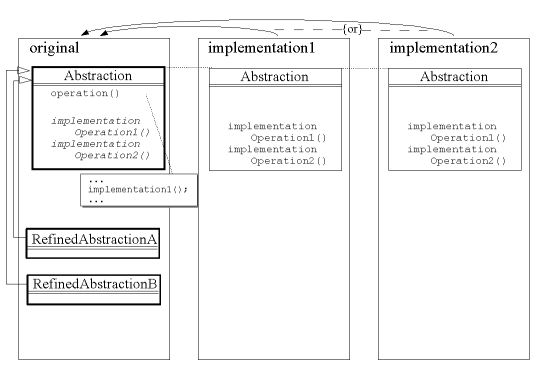
module original {
define class Abstraction {
define void operation() {
... implementationOperation1(); ...
}
define abstract void implementationOperation1();
define abstract void implementationOperation2();
}
define class RefinedAbstractionA extends Abstraction {...}
define class RefinedAbstractionB extends Abstraction {...}
}
module implementation1 extends original {
class Abstraction {
void implementationOperation1() {...}
void implementationOperation2() {...}
}
}
module implementation2 extends original {
class Abstraction {
void implementationOperation1() {...}
void implementationOperation2() {...}
}
}
重要な改善は発見できなかった。
オブジェクトに責任を動的に追加する。 Decorator パターンは、サブクラス化よりも柔軟なオペレーション拡張方法を提供する。
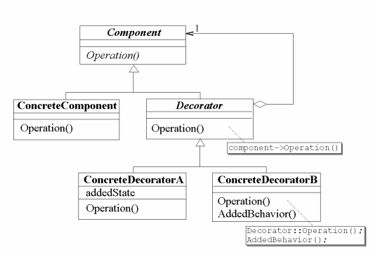
Component や Decorator へのメソッドまたはアブストラクトメソッド追加を用いる。
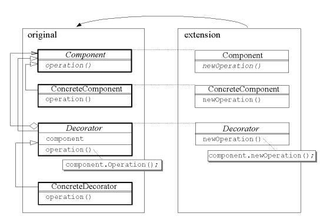
module original {
define abstract class Component {
define abstract void operation();
}
define class ConcreteComponent extends Component {
void operation(){...}
}
define abstract class Decorator extends Component {
Component component;
void operation(){ component.operation(); }
}
define class ConcreteDecorator extends Decorator {
void operation(){...}
}
}
module extension extends original {
class Component {
define abstract void newOperation();
}
class ConcreteComponent {
void newOperation(){...}
}
class Decorator {
void newOperation(){ component.newOperation(); }
}
}
Component に対してクラス拡張を用いる。
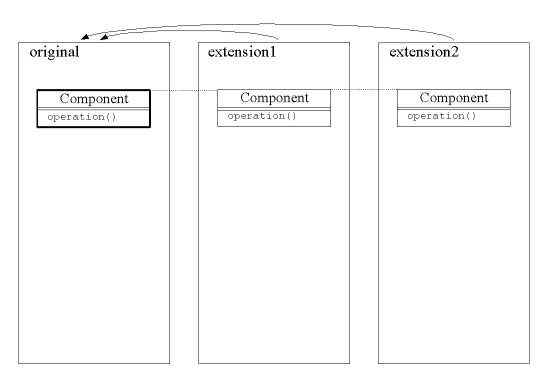
module original {
define class Component {
define void operation();
}
}
module extension1 extends original {
class Component {
void operation(){...}
}
}
module extension2 extends original {
class Component {
void operation(){...}
}
}
サブシステム内に存在する複数のインターフェースに１つの統一インターフェースを与える。 Facade パターンはサブシステムの利用を容易にするための高レベルインターフェースを定義する。
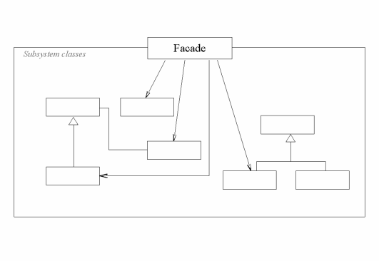
名前空間分離を用いる
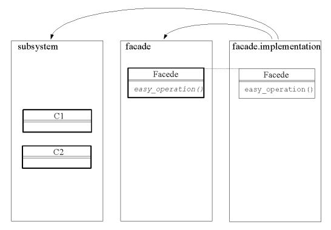
module subsystem {
define class C1 { ... }
define class C2 { ... }
...
}
module facade {
define class Facade {
define abstract void easy_operation();
}
}
module facade.implementation extends facade, subsystem {
class Facade {
void easy_operation() { ... }
}
}
重要な改善は発見できなかった。
重要な改善は発見できなかった。
１つ以上のオブジェクトに要求を処理する機会を与えることにより、要求を送信するオブジェクトと受信するオブジェクトの結合を避ける。受信する複数のオブジェクトをチェーン状につなぎ、あるオブジェクトがその要求を処理するまで、そのチェーンに沿って要求を渡していく。
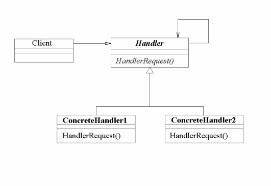
Handler クラスと ConcreteHandler クラスにメソッド追加を用いる。
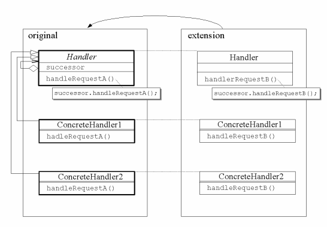
module original {
define abstract class Handler {
Handler successor;
define void handleRequestA(){ successor.handleRequestA(); }
}
define class ConcreteHandler1 extends Handler {
void handleRequestA() {...}
}
define class ConcreteHandler2 extends Handler {
void handleRequestA() {...}
}
}
module extension extends original {
class Handler {
define void handleRequestB(){ successor.handleRequestB(); }
}
class ConcreteHandler1 {
void handleRequestB() {...}
}
class ConcreteHandler2 {
void handleRequestB() {...}
}
}
重要な改善は発見できなかった。
言語に対して、文法表現と、それを使用して文を解釈するインタープリタを一緒に定義する。
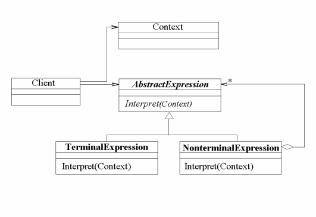
AbstractExpression に対してアブストラクトメソッド追加を用いる。
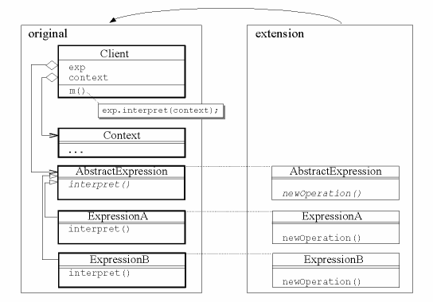
module original {
define class Client {
AbstractExpression exp;
Context context;
define void m(){
exp.interpret(context);
}
}
define class Context {...}
define abstract class AbstractExpression {
define abstract void interpret(Context context);
}
define class ExpressionA extends AbstractExpression {
void interpret(Context context){...}
}
define class ExpressionB extends AbstractExpression {
void interpret(Context context){...}
}
}
module extension extends original {
class AbstractExpression {
define abstract void newOperation();
}
class ExpressionA {
void newOperation(){...}
}
class ExpressionB {
void newOperation(){...}
}
}
集約オブジェクトが基にある内部表現を公開せずに、その要素に順にアクセスする方法を提供する。
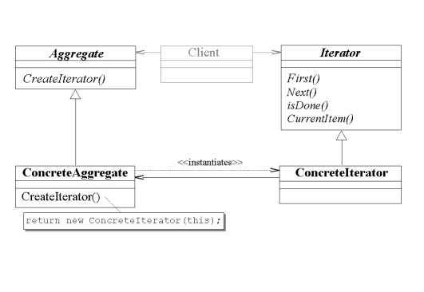
ConcreteAggregate と ConcreteIterator に対して名前空間分離を用いる。
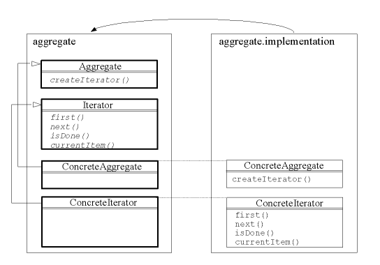
module aggregate {
define class Aggregate {
define abstract Iterator createIterator();
}
define class Iterator {
define abstract void first();
define abstract void next();
define abstract boolean isDone();
define abstract Object currentItem();
}
define class ConcreteAggregate extends Aggregate {
}
define class ConcreteIterator extends Iterator {
}
}
module aggregate.implementation extends aggregate {
class ConcreteAggregate {
Iterator createIterator() {...}
}
class ConcreteIterator {
// ConcreteAggregate に直接アクセスできる。
void first() {...}
void next() {...}
boolean isDone() {...}
Object currentItem() {...}
}
}
重要な改善は発見できなかった。
カプセル化を破壊せずに、オブジェクトの内部状態を捉えて外面化しておき、オブジェクトを後にこの状態に戻すことができるようにする。
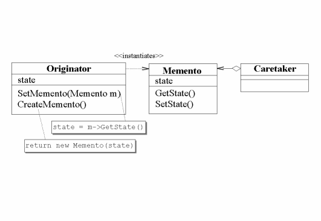
Memento に対して名前空間分離を用いる。
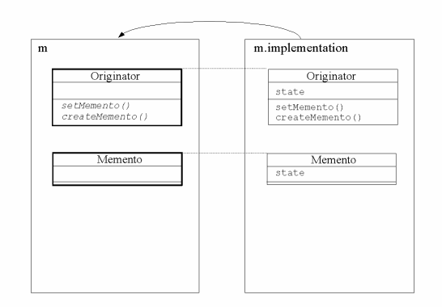
module m {
define class Originator {
define abstract void setMemento(Memento m);
define abstract Memento createMemento();
}
define class Memento {}
}
module m.implementation extends m {
class Originator {
int state;
void setMemento(Memento m) {...}
Memento createMemento() {...}
}
class Memento {
int state;
}
}
あるオブジェクトの状態が変更されたときに、それに依存するすべてのオブジェクトに自動的にそのことが知らされ、また、それらが更新されるように、オブジェクト間に一対多の依存関係を定義する。
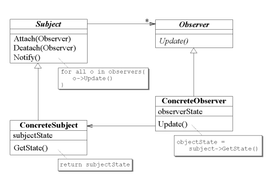
Subject に対してクラス拡張を用いる。
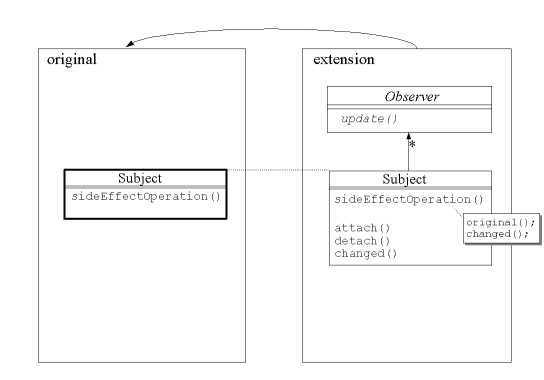
module original {
define class Subject {
define void sideEffectOperation() {...}
}
}
module extension extends original {
define abstract class Observer {
define abstract void update();
}
class Subject {
define void attach(Observer o) {...}
define void detach(Observer o) {...}
define void changed() {...}
void sideEffectOperation() {
original();
changed();
}
}
}
オブジェクトの内部状態が変化したときに、オブジェクトが振る舞いを変えるようにする。クラス内では、振る舞いの変化を記述せず、状態を表すオブジェクトを導入することでこれを実現する。
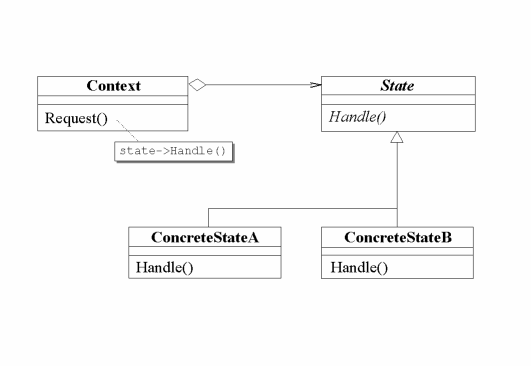
State に対するアブストラクトメソッド追加を用いる。
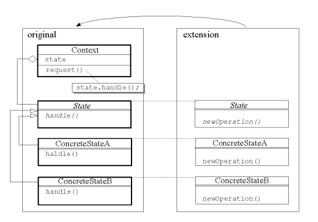
module original {
define class Context {
State state;
define void request(){
state.handle();
}
}
define abstract class State {
define abstract void handle();
}
define class ConcreteStateA extends State {
void handle(){...}
}
define class ConcreteStateB extends State {
void handle(){...}
}
}
module extension extends original {
class State {
define abstract void newOperation();
}
class ConcreteStateA {
void newOperation(){...}
}
class ConcreteStateB {
void newOperation(){...}
}
}
アルゴリズムの集合を定義し、各アルゴリズムをカプセル化して、それらを交換可能にする。 Strategy パターンを利用することで、アルゴリズムを、それを利用するクライアントからは独立に変更することができるようになる。
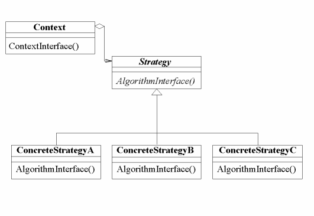
Context に対して実装モジュール選択を用いる。
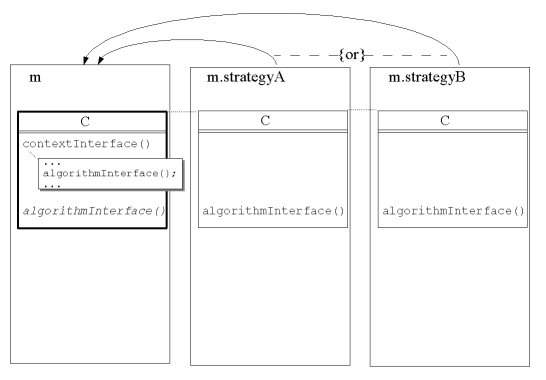
module m {
define class C {
define void contextInterface() {
... algorithmInterface() ...
}
define abstract void algorithmInterface();
}
}
module m.strategyA extends m {
class C { void algorithmInterface() {...} }
}
module m.strategyB extends m {
class C { void algorithmInterface() {...} }
}
重要な改善は発見できなかった。
あるオブジェクト構造上の要素で実行されるオペレーションを表現する。 Visitor パターンにより、オペレーションを加えるオブジェクトのクラスに変更を加えずに、新しいオペレーションを定義することができるようになる。
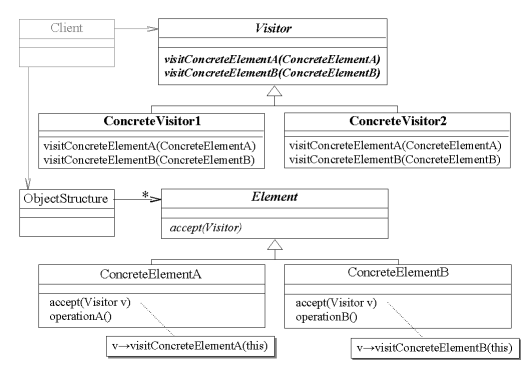
ConcreteElement クラスに対して設計モジュールと実装モジュールの分割を用いる。（この改善は以下で述べられる別解に対しても適用できる。）
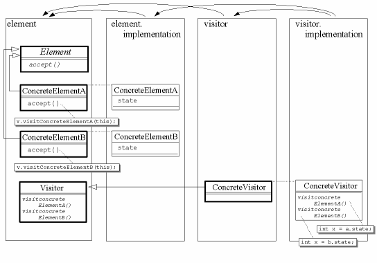
module element {
define abstract class Element {
define abstract void accept(Visitor visitor);
}
define class ConcreteElementA extends Element {
void accept(Visitor v){ v.visitConcreteElementA(this); }
}
define class ConcreteElementB extends Element {
void accept(Visitor v){ v.visitConcreteElementB(this); }
}
define abstract class Visitor {
define abstract void visitConcreteElementA(ConcreteElementA a);
define abstract void visitConcreteElementB(ConcreteElementB a);
}
}
module element.implementation extends element {
class ConcreteElementA {
int state;
}
class ConcreteElementB {
int state;
}
}
module visitor extends element {
define class ConcreteVisitor extends Visitor {}
}
module visitor.implementation
extends visitor, element.implementation {
class ConcreteVisitor {
void visitConcreteElementA(ConcreteElementA a){
... int x = a.state; ...
}
void visitConcreteElementB(ConcreteElementB b){
... int x = b.state; ...
}
}
}
Element クラスと ConcreteElement クラスに対するアブストラクトメソッド追加を用いることによって導入可能性の問題を解決できる。 Visitor や ConcreteVisitor に対してアブストラクトメソッド追加を用いると拡張性の問題を解決できる。
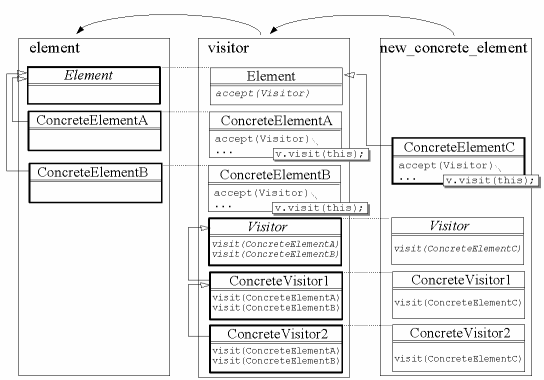
module element {
define abstract class Element {...}
define class ConcreteElementA extends Element {...}
define class ConcreteElementB extends Element {...}
}
module visitor extends element {
class Element { define abstract void accept(Visitor v); }
class ConcreteElementA { void accept(Visitor v) { v.visit(this); } }
class ConcreteElementB { void accept(Visitor v) { v.visit(this); } }
define class Visitor {
define abstract void visit(ConcreteElementA elt);
define abstract void visit(ConcreteElementB elt);
}
define class ConcreteVisitor1 extends Visitor {
void visit(ConcreteElementA elt) {...}
void visit(ConcreteElementB elt) {...}
}
define class ConcreteVisitor1a extends ConcreteVisitor1 {
void visit(ConcreteElementA elt) {...}
void visit(ConcreteElementB elt) {...}
}
}
module new_concrete_element extends visitor {
define class ConcreteElementC extends Element {
...
void accept(Visitor v) { v.visit(this); }
}
class Visitor {
define abstract void visit(ConcreteElementC elt);
}
class ConcreteVisitor1 {
void visit(ConcreteElementC elt) {...}
}
class ConcreteVisitor1a {
void visit(ConcreteElementC elt) {...}
}
}
既存のオブジェクト構造に対してアブストラクトメソッド追加を用いる。
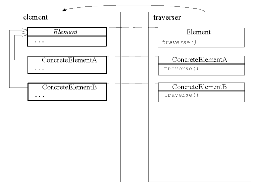
module element {
define abstract class Element {...}
define class ConcreteElementA extends Element {...}
define class ConcreteElementB extends Element {...}
}
module traverser extends element {
class Element { define abstract void traverse(); }
class ConcreteElementA { void traverse() {...} }
class ConcreteElementB { void traverse() {...} }
}
デザインパターンの改善策において使用される、 MixJuice のプログラミング技法には次のようなものがある。
既存のメソッドの処理をオーバライドによって拡張することができる。
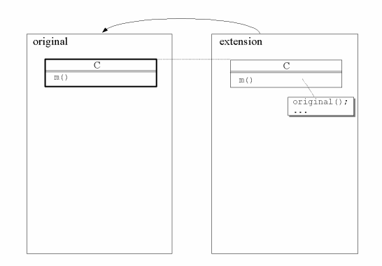
module original {
define class C {
define void m(){...}
}
}
module extension extends original {
class C {
void m(){ original(); ...}
}
}
既存のクラスに新しいスーパーインターフェースを追加することができる。言い換えると、既存のクラスを新しいインターフェースのサブタイプにすることができる。
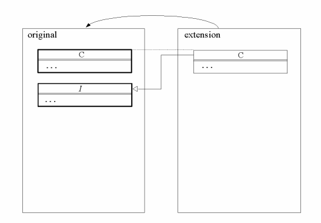
module original {
define class C {...}
define interface I {...}
}
module extension extends original {
class C implements I {...}
}
既存のクラスに新しいフィールドを追加することができる。
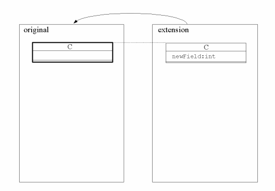
module original {
define class C {...}
}
module extension extends original {
class C {
int newField;
}
}
既存のクラスに新しいメソッドを追加することができる。
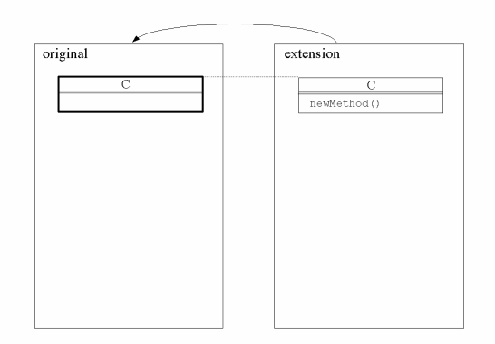
module original {
define class C {...}
}
module extension extends original {
class C {
define void newMethod(){...}
}
}
スーパーインターフェース追加、メソッド追加、フィールド追加の組み合わせ。
既存のアブストラクトクラスに対して新しいアブストラクトメソッドを追加できる。全ての具象サブクラスに対してそのメソッドに対応する実装を追加しなければ、実行可能なプログラムにならない。
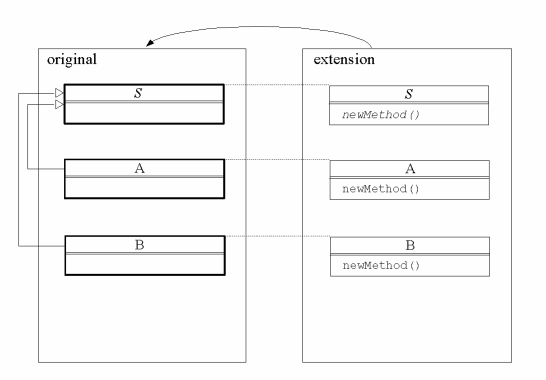
module original {
define abstract class S {...}
define class A extends S {...}
define class B extends S {...}
}
module extension extends original {
class S {
define abstract void newMethod();
}
class A {
void newMethod(){...}
}
class B {
void newMethod(){...}
}
}
クラスの境界と独立な情報隠蔽の境界を作ることができる。名前を定義する側は、提供する名前の集合を任意にグループ化できる。定義された名前を利用する側は、グループ化された名前の集合を任意に選んで利用できる。
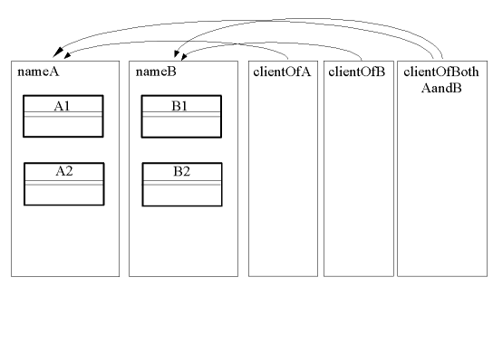
module namesA {
define class A1 {...}
define class A2 {...}
...
}
module namesB {
define class B1 {...}
define class B2 {...}
...
}
module clientOfA extends namesA { ... }
module clientOfB extends namesB { ... }
module clientOfBothAandB extends namesA, namesB { ... }
クラスを二つのモジュールに分割する。片方を仕様モジュールと呼び、仮想コンストラクタや仮想メソッドによる外部インターフェースのみを定義する。一方を実装モジュールと呼び、クラスの内部実装を定義する。
module c {
define class C {
// 公開メソッド
define abstract void m1();
define abstract void m2();
}
}
module c.implementation extends c {
class C {
// 公開メソッド
void m1(){...}
void m2(){...}
// protected fields and methods
int f1;
define void m3(){...}
}
}
リンク時にユーザが複数の異なる実装モジュールから一つの実装モジュールを選択することができる。（ユーザはモジュールのコンフリクトを避けるためにクラスの実装モジュールを慎重にただ一つだけ選ばなければならない。現在の MixJuice リンカーの実装では一つのクラスに対して一つより多い実装モジュールが選択されたとしても、エラーにならない。）
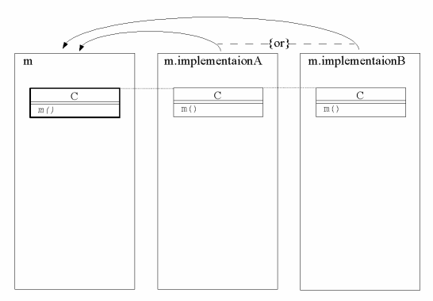
module m {
define class C { // 注意: C はアブストラクトクラスではない。
define abstract void m();
}
}
module m.implementationA extends m {
class C {
void m(){...}
}
}
module m.implementationB extends m {
class C {
void m(){...}
}
}